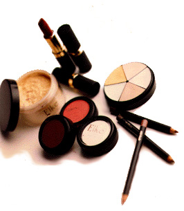

|
|
Issue 15February 15, 1999Copyright ©1999Written, directed, created and produced by
|
Hola! | |
Jobs! | |
Top Ten Summer Bummers.. and their cures |
Quiz: Are you funny? | |
What Goes and What Blows |
The Makeup Counter |
$5 Popcorn (Movie Reviews)-Star Wars and Go |
Decorating Diva |
Gee! That's Catchy Music Column- Review of The Offspring |
Fashion Statement |
Surf Report -New Link Section and special Internet Article |
Next Issue: when I feel like it

Hey, It's Issue 15, finally. So sorry that it's been six months since the last issue. I was getting a little bored with the smae old stuff but this issue i going to be great. I hope you like BFG's new spin. Tell us your suggestions for the zine by sending mail to the suggestion box! The suggestion box question of the issue is:

Butta-Fly Girlz is looking for some help! We've got a couple of positions we want to fill and even a few new columns. If you have any column ideas, email to us! Tell us what you want to see! What we'd need from you is to get your articles in on time, and to participate in any Butta-Fly Contests.

| 10. No more chemistry... wait that's not a bummer! If it is, see a physicatrist | |
| 9. Sunburn- youch! Wear sunscreen! | |
| 8. Chlorine ravaged hair! Use leave-in conditioner (I love awapuhi!) | |
| 7. No clean shorts-- make cutoffs out of some tattered jeans or cords. | |
| 6. Body breakouts- Use Neutrogeana all over body-wash | |
| 5. Way noticeable tan-lines: Fix it up with sunless tanning cream- the safe tanning alternative | |
| 4. Boredom- get some friends... j/k see Boredom Blues Solved article | |
| 3. Miss your school acquaintaces- Call 'em up for a swim party | |
| 2. No money- Get a job, call all your fav shops- they might be looking for help | |
| 1. Longing for your crush- just call him allready!!! |
Next issues topic for Top Ten:
Send your submissions to us at AllisonGr

A. Dumb and Dumber |
B. Teletubbies | |
C. Politically Incorrect |
A. Adam Sandler | |
B. Binky the clown | |
C. Janeane Garofaolo |
A. David Letterman | |
B. Kathy Lee | |
C. Dennis Miller |
A. sight gags, you just love it when people hurt themselves or do embarassing things | |
B. in joke books | |
C. very sarcastic and the kind many people wouldn't understand unless they know a lot |
A. cuffed | |
B.bootcut/wide leg | |
C. tapered |
Mostly A's: Mucho Trendy! You like to follow the trends. Try making them sometime!
Mostly B's: You've got your own style! Keep it up!
Mostly C's: You dress for comfort. Maybe you might consider adding a couple of pieces from this season's accessories for a wardrobe boost!

What Goes |
What Blows |
| Offspring's Americana | All the Xmas albums from trendy pop bands |
| Doing stuff for other people | Being selfish |
| Smiling | Frowning |
| Pooh Bear | Teletubbies and Furbys |
| Guess Who? Game | Battleship |
| Peace | Attacks in Iraq |
| Holiday Break | Going back to school |
| Keeping New Years Resolutions | Breaking New Years Resolutions |

Hi grrls!! I'm *MiRa* and I'm one of the new writers here at BFG :0) This column is all about stress relief and relaxation so I would riLLy appreciate your input! Send any tips, suggestions, sites, whatever to Aquari0713@aol.com
That's one of the definitions of stress found in Webster's dictionary but stress is really more than that! Stress can get the best of you, especially during the holidays, so here are a few ways you can relax:
exercise! Exercising is not only good for you, but it's a great way to release any ANGER! | |
get together with your friends: take a break and go see a funny movie {I recommend the RuGraTs :0) | |
take a nap....this might sound weird but it really does help cuz you wake up feeling refreshed...this is good especially for u grrls that don't get enough sleep! | |
you could always go the old-fashioned way and soak in a nice, warm bubble bath while listening to soft music (any Jewel, Sarah McLaughlin, or Erykah Badu cd is good) |
ThanX for reading this article and I hoped u enjoyed my first column! Again, I would appreciate your guys' input so feel free to send me anything! .....C u in the next issue!

Last issue we introduced our "BFG Anniversary Contest". I want to congratulate all our fabulous winners (our new columnists). Here they are!
Kupcake12 Cook's Nook(AKA Recipe Central)- Oop! Juice Prize Package: 1 bottle of OOP! JUICE, 1 nifty OOP! JUICE straw container with cool brightly colored straws, and a Kiss My Juice temporary tattoo.
FlowerBabi LOL- A pair of super cute silk boxers (with happy faces)
CheerGym3 Guyz Rate the Trends- Sebastian Lip Pencil
SCHSCHSCH Be Inspired- Cosmopolitan Virtual Makeover CD-ROM
MappersGrl Hit the CD-ROM- Fashion Trip CD-ROM
Aquari0713 Relaxation Station- Trucco Makeup Pack- Trucco Lipstick in Idol and Flesh 4, Trucco Eye Color in Eden, Trucco Blush in Sandalwood, and a sample of Sebastian's Performance Active Shampoo, Conditioner and Body Builder.
Check out our new super easy contest!


See Elke's fab beauty line- Cosmetic Collection. Photos courtesy of Cosmetic Collection
Send your makeup questions to AllisonGr or FlyGal102
Dear Makeup Lady,
Which is better to use for a self tanner, a liquid or a spray? How do I get the color spread evenly with out zebra stripes and is it ok to put it everywhere including your face?
-Not Too Tan
Dear Not Too Tan,
I would go with a self tanning lotion personally. The sprays tend to leave you streaky looking unless applied perfectly. Just make sure you apply the lotion according to the back of the package. Don't spread it too thickly and be careful behind your knees and elbows because these areas tend to soak up color. I wouldn't put it on my face just because if you mess up it's harder to cover up on your face. I suggest using bronzer for a natural glowing non-permanent look. I commend you for getting a "tan" the only safe way.
- The Makeup Lady
|
When you are depressed, think of all the people who love you. Focus on the positive. | |
"I wish you would step back from that ledge my friend. You could cut ties to all the lies that you've been living in and if you don't want to see me again, I would understand... Everyone I know has got a reason to say 'Put the past away.'"--"Jumper" by Third Eye Blind | |
"Don't frown, even when you are sad, because you never know when someone might be falling in love with your smile." --Anonymous | |
"It's better to have loved and lost than to have never loved at all." --Anonymous |

Seen any movies lately that you wanna review? Send them to us. They can be rentals or ones you've seen recently at the theater.
Our rating system is as follows: 1- stinkbug (the movie stunk) 2- mosquito (annoying, u wanted to smack the actors) 3- house fly (tolerable) 4- super fly (it was pretty kewl) 5- Butta-fly (the kewlest)
This new flick has been talked about for months on AOL! The super team of Meg Ryan and Tom Hanks have paired up again in this romantic comedy. It's pretty cute. It's about a pair of online buddies who know each other in real life (where they despise each other) but don't realize they know each other. It is directed by Nora Ephron, who also did Sleepless in Seattle. If you liked that flick, then you'll probably enjoy You've Got Mail.
This remake of the classic Hitchcock film was pretty creepy! I enjoyed it a lot but I though the first one was better. For those that haven't already heard, this new version is a shot-for-shot remake of the original. Vince Vaughn was stellar as Norman Bates, the creepy hotel manager obsessed with his mother. The film also starred Anne Heche, William Macy and Julianne Moore.
Video Pick:
My two favorite Christmas movies! They are wonderful! Rent them. "Ralphie you'll shoot your eye out!" A Christmas Story is the funniest Xmas movie ever. "Teacher says everytime a bell rings, an angel gets their wings." It's A Wonderful Life makes me cry every time. It captures the true spirit of Christmas.

Have any q's. Send 'em to us!
Dear Al and Val,
I'm 15 and in 10 months I'll be driving. I'm supposed to be getting my sister's old car but today my mom said that if I keep honors all through highschool and I drive with my drivers ed teacher...I can have her 96 mustang when I turn 16! my problem is....I'm not sure if I can keep an 85% all through highschool. I want to....it's just that this school year I am taking extremely hard classes! I always do my homework and study hard for tests. I still find it hard to make honors. can you please give me some more tips on things to do to help? thanks!
Mustang Woman
Dear Mustang Woman,
Wow! You're lucky, Mustangs are awesome! Well I recommend studying a lot!I have a similar
deal with my parents. I have to get a 3.8 to get my car. It's super tough but if you
really want that car, you'll probably have to salvage some free time to study more. Maybe
you and your friends can have study groups before big tests (it makes studying more fun as
long as you stick to it!). If you are having trouble in a class, get a tutor to help you.
Good luck!
-Al and Val

Wanna personalize your room for next to nothing? Dig out all your favorite photos and make "picture wallpaper". I just make little strips of photos that go the same direction, tape them together and voila! Your own picture paper. Hang them all over your room! My favorite ones are the stupid, embarrassing photos.
Also postcards make really cool wall decorations. I buy really wacky postcards wherever I am then tack them above my closet for a one-of-a-kind decoration. They also remind of the places I bought them and who I was with. It's a blast to look at them all.
Send your decorating ideas to AllisonGr@aol.com

Hey chick-a-dees. Tara here. In case ya don't know, I won the BFG contest, and I'm your new LoL columnist. This column is meant to be funny, not cause any harm to anyone, so don't take nothing seriously nor personally. K? If you agree to those terms, you may proceed...
LoL=Laughing out Loud
hahahahahahaha {Sorry, wanted to get in the holiday spirit, LoL}
REMEMBER PLEASE:Don't take any of this offensively, blondes. I'm a blonde myself.
Q: Why don't blondes eat Jello?
A: They can't figure out how to get two cups of water into those little packages.
Q: Why don't blondes eat pickles?
A: Because they can't get their head in the jar.
Q: How did the blonde die drinking milk?
A: The cow fell on her.
Q: How did the blonde burn her nose?
A: Bobbing for French fries.
Q: Why don't blondes double recipes?
A: The oven doesn't go to 700 degrees.
Q: Why do blondes hate M&Ms?
A: They're too hard to peel.
A blond walks into a barber shop wearing a sit of headphones. She sits down in the
chair and says I need my hair cut. Barber starts to cut the right side then stops.
Barber: "You need to take off your headphones"
Blond: "I can't, I'll just die!"
The barber cuts the right side and goes to the left side. He starts cutting then stops.
Barber: "You really have to take off your headphones"
Blond: "I can't, I'll just die!"
The barber cuts the left side and starts to the back. He starts cutting then stops.
Barber: "Now, you REALLY have to take off your headphones"
Blond: "I can't, I'll just die!"
The barber starts cutting then stops. He leans over and grabs the blonde's headphones. She
gags then falls to the ground dead. The barber picks up the headphone and listens.
*Breathe In. Breathe Out. Breathe In. Breathe Out.*

Here's our product rating system:
1- stinkbug (the product stunk) 2- mosquito (not too good) 3- house fly (tolerable) 4-
super fly (it was pretty kewl) 5- Butta-fly (the kewlest)
Sebastian generously donated this product for me to review:
Zero Weightless Hairspray (5- Butta-Fly)- Awesome stuff! It really was weightless! It also holds really well! It comes in a huge can too! It's the best hairspray I've ever used! Plus it smells good!
If you have any product reviews, send them to us!

Send in your Music Reviews to AllisonGr
![[Cover Art]](http://c.mblvd.com/md/ca/1/thumb/073943.gif)
I definitely recommend The Offspring's latest "Americana". It's mighty awesome! On the radio, a couple songs are already catchy! They include the super funny "Why Don't You Get a Job?" and their upbeat "Pretty Fly (for a white guy)" This CD is sooooo good! I don't know what else to say! Plus just look at the groovy cover art!

The Chocoholics Cookie
4 oz Unsweetened Chocolate
12 oz Semi-Sweet Chocolate
3 oz Unsalted Butter
3 oz Margarine
1 1/2 T Instant Espresso
4 Eggs
1 1/2 c Sugar
4 T Vanilla
3 c Flour
1/2 t Baking Powder
1/4 t Salt
6 oz Semi-Sweet Chocolate
8 oz Pecan Halves
8 oz Walnut Halves
6 oz Semi-Sweet Chocolate
Directions:
Place unsweetened chocolate, 12 oz semi-sweet chocolate, butter, margarine and espresso in
top of double boiler and place over simmering (not boiling) water until chocolate is about
3/4 melted. Meanwhile, beat the eggs with a wire whisk in a large mixing bowl. Gradually
add sugar, whisking until mixture becomes thick and light in color. When chocolate is
almost melted, remove from heat and stir until completely melted and satiny in appearance.
Gradually whisk chocolate into egg mixture. Stir with a wooden spoon to incorporate. Sift
flour, baking powder and salt directly into chocolate mixture. Gently stir until the dry
ingredients are barely incorporated. Cut the 6 oz of semi-sweet chocolate into 1/2 inch
chunks and stir into dough along with the toasted nuts. Lightly butter 4 aluminum baking
sheets. (do not use foil or cookies will burn) Drop dough by tablespoonfuls, 12 to a sheet
to leave room for cookies to spread. Bake only one sheet at a time in center of oven. Bake
at 350 degrees for 10 to 12 minutes, or until cookies lose their shine. Cookies will still
be very soft. Allow to cool for 2 minutes before removing from pans. Using a pin-sized tip
on an icing bag, pipe melted semi-sweet chocolate onto cookies in a criss-cross pattern.
Allow to cool at least 1 hour before storing in tins. Makes 50 one-ounce cookies.
For more cookie recipes: http://www.wester.net/Momz/cookies.html

Stuff I predict will be cool next year!
| Cardigans still rule as a layering accessory! | |
| Little barrettes look super cute in your hair! | |
| Messenger bags are getting increasingly popular | |
| Ballet flats are the shoe of the season! (Especially for us tall girls!) | |
| Fuzzy sweaters are warm and stylin'! | |
| Delicate necklaces spruce up any outfit! |
Send your questions, comments, and suggestions to AllisonGr@aol.com

Hello girls! My name is Kristen and I am proud to have the chance of writing a article for Butta-Fly Girls. I think that by the heading the topic of the article is self-explanatory. Anyway, read on!
Andrew dishes: "Personally, I think that they are okay. My girlfriend seems to like them, so I guess I do too."
Jeff admits: "Sorry, but I don't really notice things like that. I look at her looks and personality, not clothing style."
David says: "I think they are kind of cool. They look great on my girlfriend.
Paul digs: "They are really ugly! Ugh! Why can't girls wear more sweaters and cooler stuff."
Eric protests: "Looking good!"
Lenny answers: "I hate 'em!"
Now you have a little idea on what guys like and dislike about our favorite trend, Cardigans. Check out next issue's topic by tuning into the Guyz Rate The Trends column! And if you know of a guy that wants to join our "guy panel" please have them e-mail CheerGym3@aol.com !

Check out our newly updated sections:
Surf Report- a collection of wacky links!
Hottie Haven- tons of links to hot actor pages!
Adios chicas! The next issue will be out sometime in January!
| Contest Results! |
Send us your ideas! We need your help to make this 'zine awesome!

Check out our new sponsor! They're awesome!